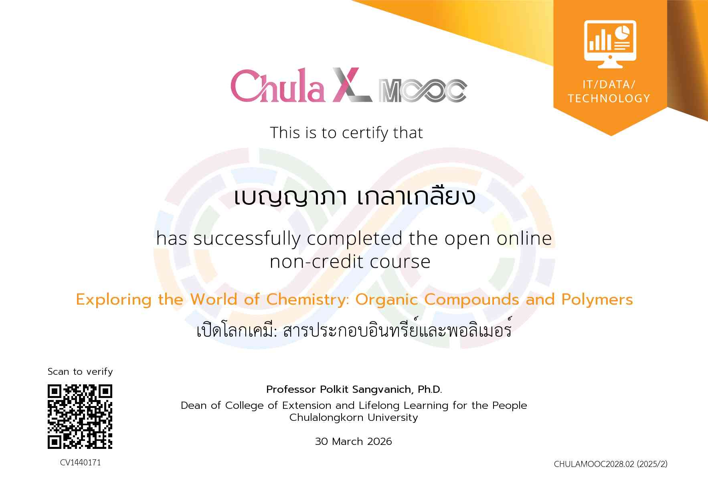
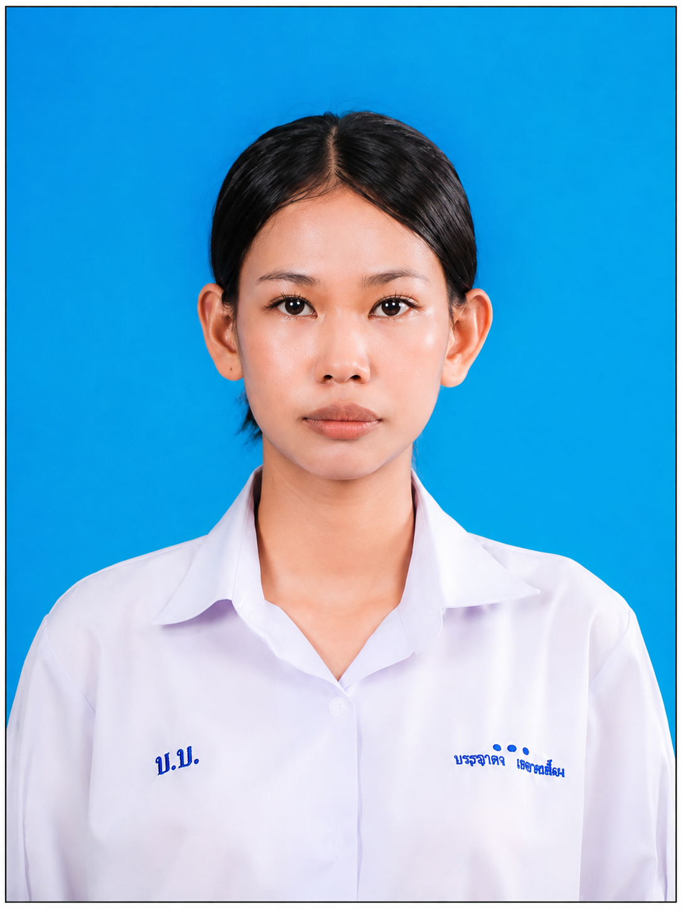
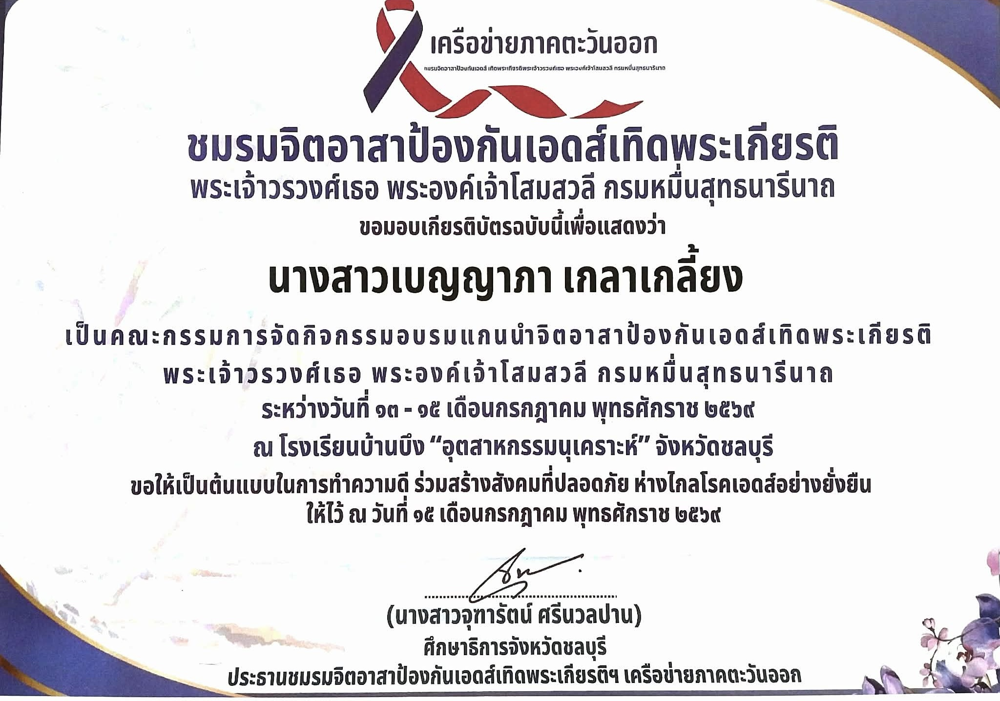
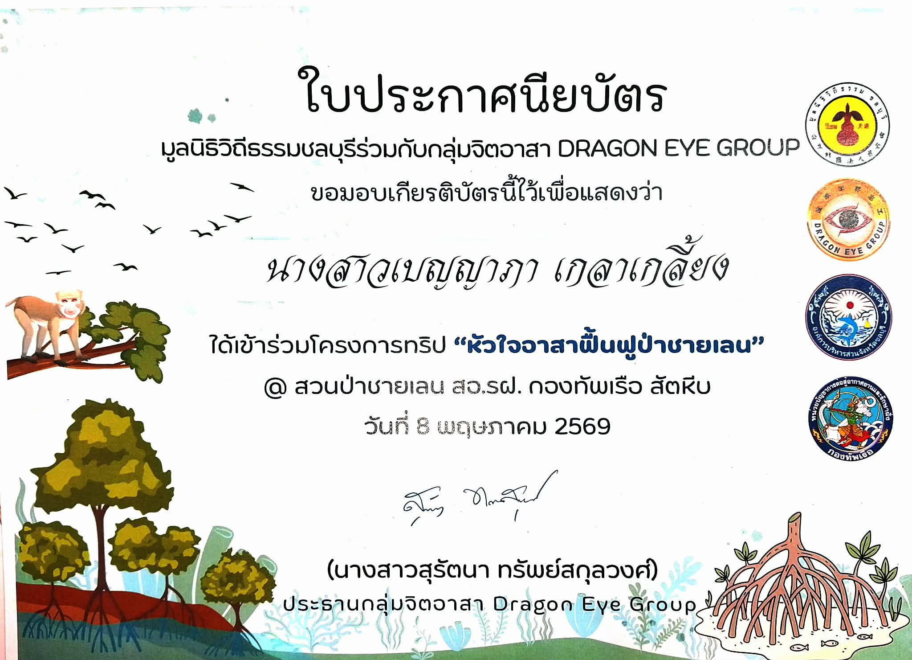
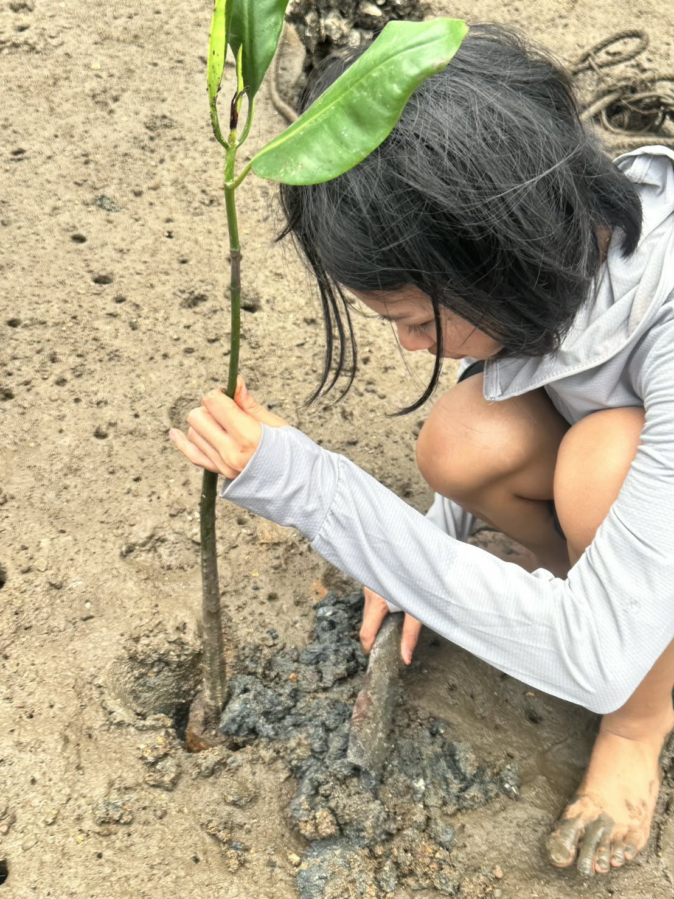
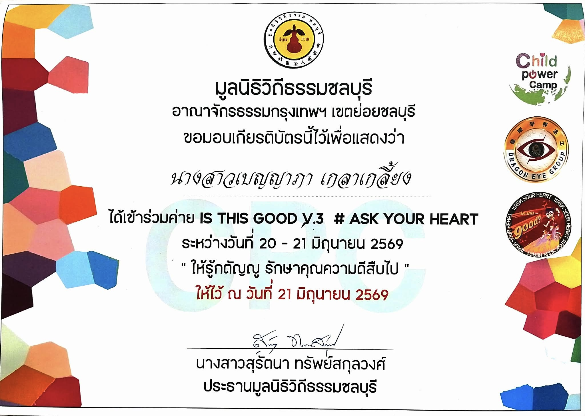
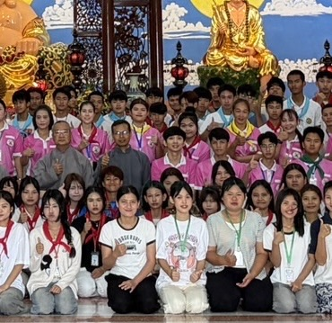

ได้รับเกียรติบัตรจากการเรียนล่วงหน้า เปิดโลกเคมี: สารประกอบอินทรีย์และพอลิเมอร์ Chula X MOOC
30 มีนาคม 2569
สิ่งที่ได้รับจากการเข้าร่วมกิจกรรมนี้ คือ ได้รับความรู้เรื่องสารประกอบอินทรีย์และพอลิเมอร์
MY PERSONAL

คณะพยาบาลศาสตร์ สาขาพยาบาลศาสตร์
จุฬาลงกรณ์มหาวิทยาลัย
แฟ้มสะสมผลงาน (Portfolio) เล่มนี้ จัดทำขึ้นเพื่อเป็นตัวแทนในการนำเสนอข้อมูลเกี่ยวกับ ประวัติส่วนตัว ความรู้ ความสามารถ ทักษะ และกิจกรรมต่างๆ ของข้าพเจ้า โดยเฉพาะความสนใจและความมุ่งมั่นที่มีต่อการศึกษาต่อ
ภายในแฟ้มสะสมผลงานเล่มนี้ ประกอบด้วย ประวัติส่วนตัว ผลการเรียน กิจกรรมที่ข้าพเจ้าได้เข้าร่วม
ชื่อ น.ส.เบญญาภา เกลาเกลี้ยง
ชื่อเล่น โบนัส
อายุ 17 ปี
วันเกิด 26 ธันวาคม 2551
สัญชาติ ไทย
เชื้อชาติ ไทย
ศาสนา พุทธ
สถานศึกษา โรงเรียนบ้านบึง "อุตสาหกรรมนุเคราะห์"
แผนการเรียน วิทยาศาสตร์-คณิตศาสตร์ (MSEP)
GPAX 3.83

30 มีนาคม 2569
สิ่งที่ได้รับจากการเข้าร่วมกิจกรรมนี้ คือ ได้รับความรู้เรื่องสารประกอบอินทรีย์และพอลิเมอร์

ณ โรงเรียนบ้านบึง "อุตสาหกรรมนุเคราะห์"
13 - 15 กรกฎาคม 2569
สิ่งที่ได้รับจากการเข้าร่วมกิจกรรมนี้ คือ ได้ทำจิตอาสาและรับความรู้เรื่องเอดส์ทั้งในการป้องกัน และวิธีรักษาตนเองให้ห่างไกลจากโรคเอดส์


ณ สวนป่าชายเลย สอ.รฝ. กองทัพเรือ สัตหีบ
8 พฤษภาคม 2569
สิ่งที่ได้รับจากการเข้าร่วมกิจกรรมนี้ คือ ได้รับความรู้และได้ร่วมทำจิตอาสาในการปลูกป่าชายเลน เพื่อป้องกันการกัดเซาะชายฝั่งและเป็นแหล่งที่อยู่อาศัย ของสัตว์น้ำขนาดเล็ก


20 - 21 มิถุนายน 2569
สิ่งที่ได้รับจากการเข้าร่วมกิจกรรมนี้ คือ ได้ดูแลและจัดกิจกรรมเสริมสร้างคุณธรรมจริยธรรม ให้แก่เด็กเพื่อขัดเกลาจิตใจ ปลูกฝังคุณธรรมจริยธรรม ให้เติบโตเป็นผู้ใหญ่ที่ดีของสังคม
kelakeliyngb@gmail.com
0805057578
bonus_benyapa